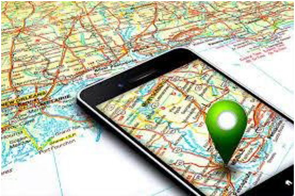

GPS in Smartphones

Finding Your Location: GPS Inside Your Smartphone
Smartphones use GPS to determine a user's location and provide many location-based services. Every modern smartphone contains a small GPS receiver that listens for signals from satellites orbiting Earth.
When location services are turned on, the phone receives signals from multiple satellites and calculates its position using trilateration. This allows the phone to determine its latitude, longitude, and sometimes altitude.
However, phones usually combine GPS with other technologies to improve speed and accuracy. One of these technologies is Assisted GPS (A-GPS). A-GPS uses nearby cell towers and Wi-Fi networks to help estimate the phone's location before satellite signals are fully processed.
This allows smartphones to determine locations much faster, especially when the GPS receiver is turned on for the first time.
Everyday Applications of Smartphone GPS
GPS in phones is used for many everyday applications:
🗺️ Navigation
Navigation apps for driving, walking, or biking
📍 Nearby Services
Finding nearby restaurants, stores, or services
🚕 Ride-sharing
Ride-sharing services such as taxis and delivery apps
🌤️ Weather
Weather apps that show forecasts for your exact location
🏃 Fitness
Fitness trackers that measure running or cycling routes
🚨 Emergency
Emergency services that locate people during emergencies
When you open a map application, a small blue dot usually appears showing where you are. That location is calculated by your phone using signals from satellites thousands of kilometers above Earth.